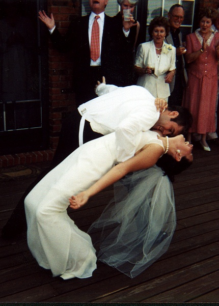
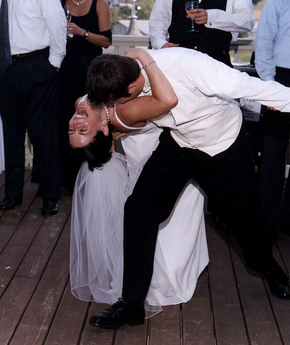
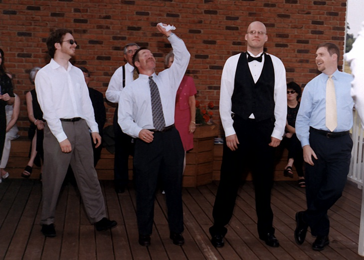

Us
Pascale
Graham
Thornbush
Family & Friends
SeaMaster
Wedding
France 2001
Lockie's Art
What's New
Reception Pictures
Early On
Party Time!
Breathe a sigh of relief and have a good time.
|

The first dance finished with a flourish. |
|

Another angle of "The Dip". |

The song was truly a highlight. There is no shame in this family. ;) |
|

Okay, have you ever seen men so eager to be the next in line?
|
Reception - Parting Shots